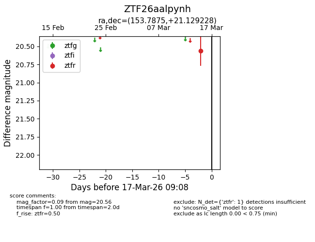
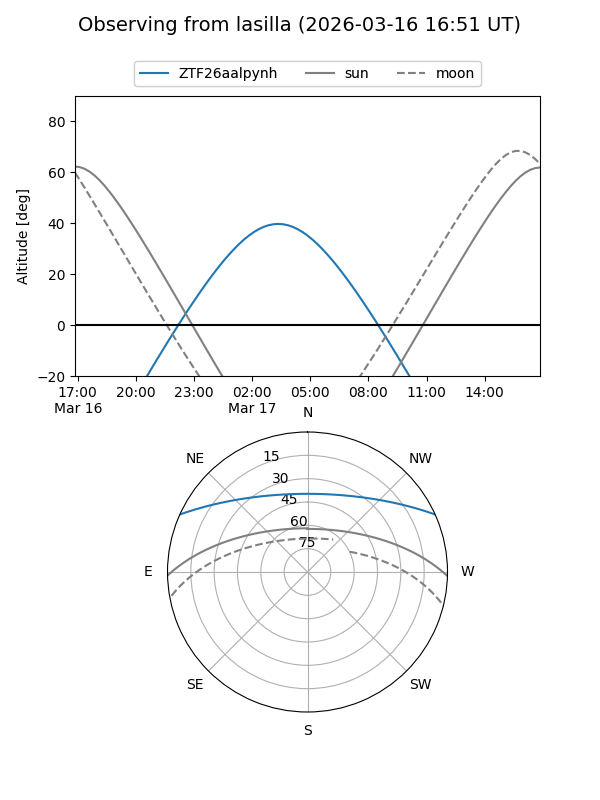
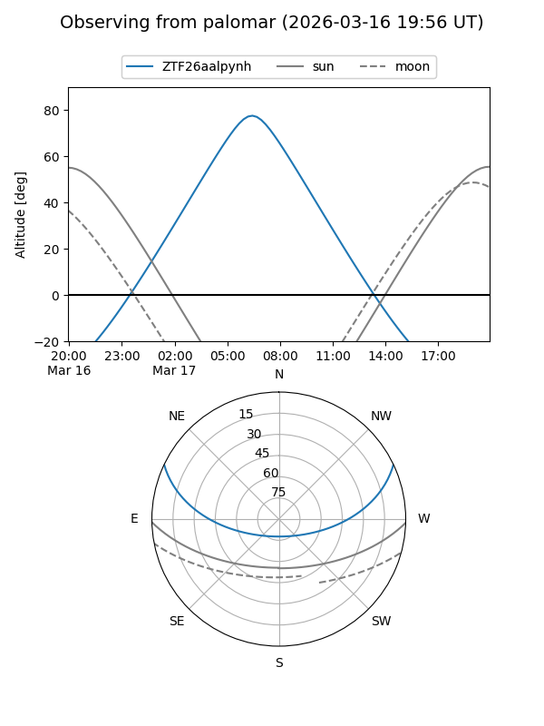

ZTF26aalpynh
Target ZTF26aalpynh at 2026-03-17 09:10
Aliases and brokers:
FINK: link
Lasair: link
ALeRCE: link
alt names
ZTF26aalpynh (ztf,fink_ztf)
Coordinates:
equatorial (ra, dec) = 153.7875,+21.12923
equatorial (HMS+DMS) = 10:15:08.99,+21:07:45.22
galactic (l, b) = (213.8468,+53.98503)
Flags:
Photometry:
last ztfr=20.56
1 ztfr detections
Lightcurve

Visibility


Additional plots